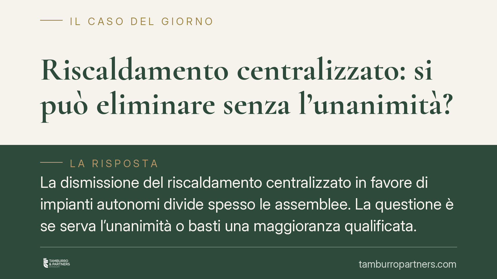

Riscaldamento centralizzato: si può eliminare senza l'unanimità?
La dismissione del riscaldamento centralizzato in favore di impianti autonomi divide spesso le assemblee. La questione è se serva l'unanimità o basti una maggioranza qualificata. La risposta dipende da un distinguo decisivo: intervento di efficientamento energetico oppure semplice soppressione del servizio. Qui chiariamo il quadro normativo vigente, i quorum applicabili e gli errori da evitare in delibera.

Il nodo: innovazione energetica o soppressione del servizio
La domanda ricorrente è se il condominio possa abbandonare l'impianto centralizzato passando ad autonomi senza il consenso di tutti. La risposta non è unica, perché tutto ruota attorno alla natura dell'intervento.
Occorre distinguere due situazioni molto diverse. Da un lato c'è la sostituzione del centralizzato con impianti autonomi finalizzata al risparmio energetico: qui si è nel campo delle innovazioni volte al contenimento dei consumi. Dall'altro c'è la mera soppressione abdicativa del servizio, cioè la pura e semplice rinuncia a un bene comune senza alcun fine migliorativo: situazione che la giurisprudenza tratta con tutela rafforzata dei singoli.
Il punto non è formale. Una delibera che si presenta come efficientamento, ma che nella sostanza elimina il servizio senza reale beneficio energetico, resta esposta a impugnazione.
Inquadramento normativo
Dopo la riforma del condominio (L. 220/2012), le innovazioni dirette al contenimento energetico sono disciplinate dall'art. 1120, comma 2, n. 2, c.c., che le qualifica come innovazioni "agevolate". Per queste l'art. 1120 richiama il quorum dell'art. 1136, comma 2, c.c.: maggioranza degli intervenuti in assemblea che rappresenti almeno la metà del valore dell'edificio (500 millesimi).
È questo il riferimento oggi da utilizzare. L'art. 26 L. 10/1991 continua a disciplinare gli interventi di risparmio energetico in edilizia e, nel testo vigente, coordina la materia con i quorum codicistici; non va invocato come base autonoma di un quorum diverso. In sede di delibera, pertanto, conviene ancorare la decisione all'art. 1120, comma 2, c.c., in combinato con l'art. 1136, comma 2, c.c.
Altro è il distacco del singolo condomino dall'impianto centralizzato, regolato dall'art. 1118, comma 4, c.c.: si tratta di una scelta individuale, non di una delibera assembleare, consentita se il distacco non comporta notevoli squilibri di funzionamento o aggravi di spesa per gli altri. Non confondere i due piani: qui parliamo della decisione collettiva di dismettere l'impianto, non della facoltà del singolo.
La linea interpretativa della giurisprudenza
L'orientamento dei giudici di merito, in più pronunce, muove da questa chiave di lettura: quando la dismissione del centralizzato è accompagnata dall'installazione di impianti autonomi e risponde a una finalità effettiva di risparmio energetico, la delibera può essere assunta a maggioranza qualificata senza unanimità.
Condizione essenziale è che la finalità energetica sia reale e dimostrabile, non dichiarata in astratto. Diversamente, quando manca qualsiasi beneficio e si tratta di pura rinuncia al servizio, la tutela dei condomini contrari si rafforza e la maggioranza qualificata può non bastare.
Implicazioni pratiche per amministratori e condomini
Per l'amministratore il messaggio operativo è chiaro: non è la volontà politica dell'assemblea a reggere la delibera, ma la prova della finalità energetica. Serve una relazione tecnica che documenti il miglioramento atteso in termini di consumi ed efficienza.
Resta centrale la ripartizione delle spese. Vanno chiariti in delibera: i costi di rimozione o messa in sicurezza del vecchio impianto, gli oneri per i nuovi impianti autonomi (spesso a carico del singolo proprietario per la parte interna all'unità), ed eventuali oneri residui o debiti pregressi legati al centralizzato. Una delibera silente sul riparto è terreno fertile per il contenzioso.
Per il condomino contrario, l'impugnazione nei termini resta lo strumento di tutela, con onere di contestare la reale sussistenza della finalità energetica o i vizi del quorum.
Cosa fare in concreto
- Acquisite una relazione tecnica redatta da professionista abilitato che quantifichi il beneficio energetico atteso: è il presupposto della legittimità della delibera.
- Verbalizzate il quorum con precisione, dando atto della maggioranza degli intervenuti e dei millesimi (almeno 500), con riferimento all'art. 1120, comma 2, e all'art. 1136, comma 2, c.c.
- Disciplinate la ripartizione delle spese in delibera: rimozione, nuovi impianti, oneri residui. Nessun punto lasciato implicito.
- Distinguete i piani: la dismissione collettiva segue l'art. 1120 c.c.; il distacco del singolo l'art. 1118, comma 4, c.c. Non trattateli come equivalenti.
- Se siete contrari, consigliamo di valutare l'impugnazione nei termini, concentrandovi sulla reale finalità energetica e sulla correttezza del quorum.
Disclaimer
Contributo informativo a cura di Tamburro & Partners Avvocati - Avv. Giuseppe Tamburro. Non costituisce parere legale.
Ogni condominio ha una storia a sé.
Se gestisci un'amministrazione e vuoi un confronto su una specifica questione condominiale, scrivi allo studio. Ti rispondiamo entro un giorno lavorativo.